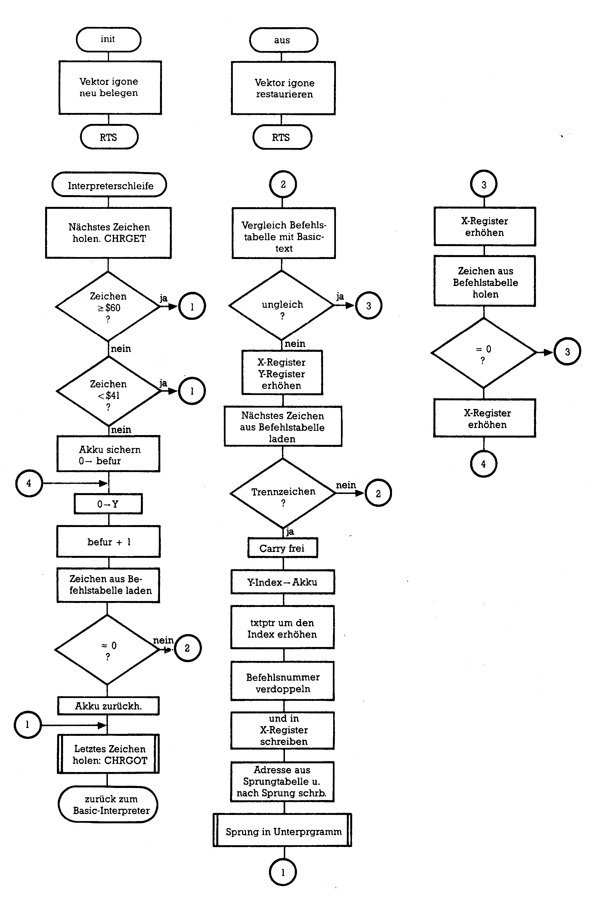

Von Basic zu Assembler (Teil 7)
Neben einer Anzahl von Integer-Routinen und einer Technik zum Schreiben von Basic-Erweiterungen beschäftigen wir uns mit Assembler-Programmen, die sich selbst verändern.
Selbstmodifizierende Programme — also Programme, die sich im Verlauf der Abarbeitung selbst verändern — sind dem einen ein Graus, dem andern aber die Essenz der Raffinesse. Welcher Ansicht man auch immer sein mag: Es sind mit dieser Technik recht interessante Dinge möglich, die auf andere Weise nicht oder nur schwer realisierbar wären.
Programm und Daten
Wie unterscheidet unser Computer Programme und Daten? Sehen wir uns zuerst einmal an, wie das in Basic aussieht: Beide (Daten und Programme) werden im RAM streng voneinander getrennt (beim C 128 liegen sie sogar in unterschiedlichen Speicherbänken) und völlig unterschiedlich verwaltet. Deshalb ist die Selbstveränderung von Basic-Programmen auch mit allerlei Tricks verbunden, die entweder über POKEs den Programmspeicher beeinflussen oder im programmierten Direktmodus arbeiten. Ein simples Basic-Beispiel zeigt Listing 1:
Dieses Programm für den C 64 (bei anderen Computern muß die Adresse in Zeile 50 entsprechend geändert werden) verändert während des Programmablaufes die Speicherstelle 2112. Dort befindet sich der Buchstabe A im PRINT-Befehl der Zeile 30. Durch den POKE-Befehl gelangt nach dem A ein B, dann ein C und so weiter in das PRINT-Argument. Das sehen Sie dann, wenn Sie sich nach dem Ablauf des Programms mit LIST noch einmal die PRINT-Anweisung ansehen: Das A ist verschwunden, statt dessen ist dort ein Grafikzeichen (bei eingeschalteter Groß- und Kleinschreibung) oder der griechische Buchstabe Pi (bei Großschreibung) zu finden. Die andere Technik, also die, die im programmierten Direktmodus arbeitet, bedient sich des Tastaturpuffers. Falls Sie darüber mehr wissen möchten, dann lesen Sie bitte den Artikel »Lernen Sie Ihren Commodore 64 kennen«, Teil 4, in der Ausgabe 8/85 der Zeitschrift Happy-Computer, Seite 45ff. C 128-Benutzer sollten die Ausgabe 7/86 des 64'er-Magazins auf Seite 85 aufschlagen: Dort sind allerlei Verwendungsmöglichkeiten dieser Technik für den großen Bruder des C 64 vorgeführt. Soweit also das Ganze in Basic, wie verhält es sich in Assembler?
Hier existiert für den Computer nur eine lange Straße aufeinanderfolgender Speicherzellen. Der Zentralprozesser orientiert sich am Programmzähler, in dem sich die gerade aktuelle Anschrift befindet. In jeder Hausnummer findet die CPU irgendeinen Code, der sie veranlaßt, darauf zu reagieren. Alle derartigen Codes führen zu Veränderungen von Speicherinhalten — und sei es auch nur das Hochzählen des Programmzählers beim NOP-Befehl, das Chaos beim Programmabsturz oder auch das Eintragen von ASCII-Werten in den Bildschirmspeicher. Malliegen diese Veränderungen weit weg vom Programm-Code, mal näher dran: Nichts hindert uns, auch in dem Speicherteil Änderungen vorzunehmen, in dem das Programm abgelegt ist, was uns mit Assemblern wie dem Hypra-Ass leicht fällt. Listing 2 zeigt, wie man Vergleichbares in Maschinensprache erreichen kann:
Das Programm ist für die älteren Versionen des C 64 geschrieben — daher die Belegung des Bildschirmfarbspeichers —, läuft aber auch auf den anderen Versionen, bei denen man die Zeilen, die sich auf die Farben beziehen, weglassen kann. Erinnern Sie sich bitte an die Art, wie der 6502 und seine kompatiblen Nachkommen Adressen im Speicher ablegen: Wenn wir ein Assemblerprogramm schreiben:
STX $D800
dann findet sich im Speicher die Code-Folge:
| Speicherstelle | Code | Bedeutung |
|---|---|---|
| Farb | 8E | Code für absolutes STX |
| Farb+1 | 00 | LSB der Adresse $D800 |
| Farb+2 | D8 | MSB der Adresse $D800 |
Deshalb erhöhen wir Farb + 1 und Bild + 1.
Ebenso wie im Basic-Beispiel zeigt sich auch im Listing 2 ein Nachteil dieser Art der Programmierung: Das Programm kann kein zweites Mal gestartet werden — eben weil wir es verändert haben. Jedenfalls leistet es beim Neustart nicht mehr genau dasselbe. Sehen Sie sich nach dem Programmdurchlauf einmal das Disassemblerlisting an, dann finden Sie in den veränderten Zeilen:
CODE LDA #$00
BILD STA $04FF
FARB STX $D8FF
Beim Starten dieses veränderten Programms wird zuerst der Klammeraffe (das ist das Zeichen mit dem Code 00) in die Bildschirmspeicherstelle $04FF geschrieben. Erst danach läuft alles seinen gewohnten Gang, weil $FF+1 als $00 verstanden wird. Im Falle dieses Programms hätten wir die Schwierigkeit leicht umgehen können: Wenn wir nämlich anstelle des A mit dem Klammeraffen angefangen hätten, sähe unser Programm nach dem Ablauf genauso aus wie vorher.
Es ist also erforderlich, in solche selbstmodifizierenden Programme einen Reparaturmechanismus einzubauen, der die veränderten Speicherinhalte wieder auf einen definierten Startwert bringt. Das geschieht durch eine Initialisierung vor dem eigentlichen Programm oder durch Rückstellen aller beeinflußten Speicherplätze nach dem Arbeitsteil — was eine weitere Selbstmodifikation wäre. Anstelle des BRK im Listing 2 stünde dann beispielsweise:
STX CODE + 1
DEX
STX BILD + 1
STX FARB + 1
BRK
Zur Übung können Sie ja mal die andere Möglichkeit — also die Initialisierung vor dem eigentlichen Programm — einbauen.
Anwendung der Selbstmodifikation
Vielleicht haben Sie nun schon eine Vorstellung davon, was für ein mächtiges Programmierinstrument man mit dieser Technik in der Hand hat. Wir haben ja schon im Listing 2 eine Schleife geschrieben und sind dabei ohne die indirekte Adressierung ausgekommen. Der Schritt zur 16-Bit-Schleife ist nun nicht mehr weit: Man veranlaßt einfach, daß nicht nur die LSBs der Adressen (BILD und FARB) anders eingetragen werden, sondern auch die MSBs nach jedem kompletten 8-Bit-Schleifen-Durchlauf. Florian Müller hat sich die Mühe gemacht, in seinem Kurs »Effektives Programmieren in Assembler«, Kapitel 10 (erschienen im Assembler-Sonderheft des 64'er-Magazins, Sonderheft 8/85, Seite 97ff.) allerlei Varianten der Anwendung von Selbstmodifikation in Programmen vorzustellen. Deshalb soll hier nur ein kleiner Überblick gegeben werden.
So ist es beispielsweise möglich, eine ganze Reihe von Befehlen zu simulieren, die es im Sprachschatz des 6502-Assemblers nicht gibt: indirekte JSR-Sprünge (es gibt nur den indirekten JMP-Befehl), indirekte Schiebe-, Dekrementier- und Inkrementierbefehle. Befehle mit unmittelbarer Adressierung (beispielsweise CMP #$20)können veränderliche Argumente erhalten, man kann auf diese Weise beispielsweise den Inhalt des Akku und des X-Registers addieren:
STX ADD+1 ;X-Register hinter ADC-Befehl ablegen
... ;eventuell weiteres Programm
CLC ;Carry-Bit freimachen vor Addition
ADD ADC #$FF ;$FF ist nur ein Füllwert (Dummy)
Komplette Befehle kann man durch Eintragen des Befehls-Codes umändern, beispielsweise aus einem BCS (Code $BO) ein BCC (Code $90) erzeugen, Unterprogrammaufrufe verhindern oder erlauben (durch Eintragen des Codes für den BIT Befehl anstelle des JSR-Codes). Ganze Programmsequenzen lassen sich durch das Programm selbst umschreiben. Sie sehen: Der Möglichkeiten gibt es viele und der Programmiererfantasie sind nur wenige Grenzen gesetzt.
Ein kurzer Blick in die CHRGET-Routine
Eine andere Anwendung selbstmodifizierender Programmtechniken befindet sich schon fix und fertig in unserem Computer (hier ist speziell der C 64 gemeint): die sogenannte CHRGET-Routine Laden Sie doch einmal den SMON und blicken Sie mittels
D 0073 008B
in den unteren RAM-Bereich hinein. Was Sie dann auf dem Bildschirm sehen, ist dieses kleine Programm, das die Aufgabe hat den Inhalt des Basic-Speichers Byte für Byte zu lesen und mit bestimmten Markierungen an den Basic-Interpreter zu übergeben. Es handelt sich um eines der wichtigsten Werkzeuge des Interpreters. Wie es genau funktioniert, sollten Sie einmal nachlesen im Kapitel 25 des Assembler-Kurses (Sonderheft 8/85, Seite 26), hier würde uns die Besprechung zu weit vom Thema wegführen. Zum Thema aber passen die ersten vier Zeilen:
0073 INC $7A
0075 BNE $0079
0077 INC $7B
0079 LDA $0225 ;$0225 steht hier nur als Dummy
007C ...
Wie Sie sicherlich bemerken, steht die Adresse, aus der etwas in den Akku geladen werden soll (Zeile 0079), bei $7A (das LSB) und $7B (das MSB). Was also in der ersten Zeile passiert, ist das Hochzählen der Ladeadresse, die gleich benutzt werden soll. Die nächste Zeile prüft, ob dabei ein Überlauf ($FF+1) stattgefunden hat. In dem Fall ist das Zero-Flag gesetzt, der Sprung nach 0079 findet nicht statt. Zuerst wird noch das MSB der Ladeadresse erhöht. Wie auch immer, die Adresse in $7A/$7B ist nun um 1 größer geworden und der Inhalt der so angezeigten Speicherstelle wird in den Akku geladen.
Bevor wir uns dem zweiten Beispiel zuwenden, noch eine Bemerkung zu einem Nachteil der selbstverändernden Programme: Wie Sie sehen, steht die CHRGET-Routine im RAM — ganz im Gegensatz zur ganzen sonstigen im ROM stehenden Software des C 64. Das hört sich vielleicht trivial an, ist aber schon vorgekommen: Eben weil man aus dem ROM nur lesen, nicht aber hineinschreiben kann, darf auch kein Programm oder auch nur ein Teil davon dort vorhanden sein, das selbstverändernde Techniken benutzt. Wenn Sie EPROMs selbst brennen, sind Sie vielleicht schon einmal über diese Falle gestolpert.
Programmierer einer Befehlserweiterung
Dies ist ein umfangreiches Thema, bei dem wir eine Anwendung der selbstmodifizierenden Programmtechnik kennenlernen, aber auch ein Verfahren, wie man neue Basic-Befehle einbinden kann. Außerdem wird uns eine ganze Palette von Interpreter-Routinen geläufig. Wir werden erstmalig mit Tabellen arbeiten und auch die eben erwähnte CHRGET-Routine bewußt einsetzen. Weil viele Leser wissen wollen, wie man die verschiedenen mathematischen Interpreter-Routinen ansteuert, werden wir dem Basic des C 64 noch einige mathematische Funktionen hinzufügen. Als Listing 3 finden Sie es weiter unten abgedruckt. Listing 4 ist das fertige Programm, das Sie mit dem MSE eingeben müssen.

Vielen Benutzern ist das Basic 2.0 zu dürftig. Auch wenn man nach mathematischen Funktionen sucht, sind es relativ wenige. So stört es beispielsweise, daß man vom gewohnten Gradmaß der Winkel bei Winkelfunktionen wie SIN, COS und TAN abweichen und erst noch auf Bogenmaß umrechnen muß. Außerdem sind es zu wenig Winkelfunktionen und die Umkehrfunktionen (arcus...)sind gar nur in einer einzigen Form vertreten: ATN. Wenn man mit Logarithmen arbeiten möchte, muß man sich immer auf die natürlichen (LOG ist nämlich In) umstellen, statt mit den normalen dekadischen arbeiten zu können. Unser aus zehn Modulen bestehendes Programm erweitert nun das Basic um neun Befehle.
Der erste davon heißt AUS. Damit kann man diese Erweiterung abschalten, falls sie nicht benötigt wird.
Es folgen zwei Funktionen zur Umrechnung von Gradmaß in Bogenmaß und umgekehrt. BOG ermittelt das Bogenmaß eines Winkels:
Aufruf: BOG,Winkel
GRD geht den umgekehrten Weg der Berechnung des Gradmaßes eines im Bogenmaß angegebenen Winkels:
Aufruf: GRD,Winkel
Sind Sie das Rechnen mit dem durch LOG erzeugten natürlichen Logarithmus leid, dann verwenden Sie DLGR für den normalen dekadischen Logarithmus:
Aufruf: DLGR,Argument
Bei den trigonometrischen Funktionen steht Ihnen nun neben SIN, COS und TAN auch der Kotangens COT zur Verfügung:
Aufruf: COT,Winkel im Bogenmaß
Die bislang nur durch recht komplizierte Formeln zu ermittelnden Umkehrfunktionen (die im Handbuch sogar teilweise falsch angegeben sind) des Sinus, Cosinus und Kotangens erreichen Sie durch die nächsten drei Funktionen ARCS, ARCC und ACOT:
Aufruf: ARCS,Argument
ARCC,Argument
ACOT,Argument
Ein kleines Bonbon noch am Schluß: Ein Polynom ist ein Ausdruck der Form:
y = a0 + a1x + a2x2 + a3x3 + ... anxn
Dabei ist n der Grad des Polynoms. Die einzelnen »a« nennt man Koeffizienten. Durch den neuen Befehl POLY kann solch ein Polynom schnell berechnet werden, indem man angibt, für welchen Wert »x« man die Berechnung ausführt, welchen Grad das Polynom hat und wie die Koeffizienten heißen:
Aufruf: POLY,x,n,an,an-1,...,a1,a0
Solche Polynome spielen in vielen Bereichen der Mathematik und der Statistik eine wichtige Rolle.
Noch zu einer Besonderheit all dieser Funktionen, die ihren Aufruf betrifft. Bei der Beschreibung des ersten Moduls werden Sie sehen, daß die hier gewählte Methode der Befehlserweiterung relativ einfach ist. Das bietet zwar den Vorzug (der im Rahmen dieses Kurses erst einmal Vorrang genießt), daß man leicht verstehen kann, wie das Ganze funktioniert, hat aber in der Handhabung der neuen Befehle einige Nachteile Ein Nachteil betrifft die Ausgabe der durch die neuen Funktionen ermittelten Ergebnisse. Während man beim Sinus beispielsweise gewohnt ist, A=SIN(x) oder B=SQR(SIN(x)) zu schreiben, die Funktion selbst also wie einen Variablenwert verwenden Kann, geht das bei unseren Funktionen nicht. Das hätte einen tieferen Eingriff in die Interpreterschleife erfordert. Andererseits war es uns zu primitiv, lediglich das Ergebnis nach der Berechnung auf dem Bildschirm ausgeben zu lassen: Man sollte schon damit weiterrechnen können. Der Kompromiß sieht etwas merkwürdig aus, funktioniert aber (und später, wenn wir weitere Formen der Befehlserweiterung kennengelernt haben, können wir das Programm auch umbauen). Das Ergebnis steht immer in der Variablen, die als letzte vor dem Funktionsaufruf genannt worden ist. Um also in der Variablen A das Bogenmaß eines Winkels zu speichern, ruft man auf:
A=A:BOG,Winkel
oder um den dekadischen Logarithmus eines Ausdruckes in A abzulegen beispielsweise:
A=0:DLGR,SQR(x)
Wenn man zwei von unseren neuen Funktionen nacheinander verwendet, beispielsweise hier den Kotangens eines Winkels, der zuvor ins Bogenmaß umgerechnet wurde, dann kann man schreiben:
B=0:BOG,Winkel:A=A:COT,B
Es ist aber auch ein abgekürzter Weg möglich, denn ein interner Zeiger weist weiterhin auf die bezeichnete Variable:
A=A:BOG,Winkel:COT,A
In beiden Fällen steht hinterher der Ergebniswert in der Variablen A, die nun ganz normal weiterverwendet werden kann.
Wie startet man diese Erweiterung? Das kommt ganz darauf an, wohin Sie sie im Speicher legen. Im Modul 1 wurde in Zeile 110 willkürlich der Start nach $5000 gelegt, was den Start durch SYS 20480 ermöglicht. Falls Sie diesem Vorschlag folgen, oder die Erweiterung statt nach $C000 (dann erfolgt der Start durch SYS 49152) in den Basic-Speicherraum legen, dann achten Sie bitte darauf, den betreffenden Speicherbereich vor dem Überschreiben durch Basic-Text, Variable oder Strings zu schützen.
Modul 1 unseres Programmes
Sehen wir uns zunächst die Label an, die im gesamten Programm benutzt werden. Die ersten fünf Adressen sind Zeiger in der Form LSB/MSB, von denen hier immer nur die niedrigere Adresse genannt wird, weil man im Programm mit LABEL und LABEL+1 arbeiten kann. Genaue Beschreibungen dieser Vektoren finden Sie im Kurs »Memory Map« von Dr. Hauck (komplett veröffentlicht im Sonderheft 7/86 des 64'er-Magazins). Deshalb soll hier nur eine kurze Erläuterung dieser Vektoren folgen.
Die Betriebssystemroutine ORPNT ist für uns nicht interessant, weil auch immer mit einem Zeiger auf die zuletzt angesprochene Variable gearbeitet wird. Erinnern Sie sich an unsere etwas ungewöhnliche Ausgabeform? Dazu brauchen wir diesen Zeiger.
CHRGET, CHRGOT und TXTPTR gehören alle zur CHRGET-Routine und' dienen dazu, das jeweils nächste Byte aus dem Basic-Programmtext zu holen und zu identifizieren. Hauck beschreibt diese Funktion recht gut.
Auch IGONE ist von Hauck erklärt worden. Das ist ein Zeiger, der normalerweise nach $ATE4 zeigt (von uns in Zeile 240 als GONEI bezeichnet) und für die Auswertung des Basic-Textes bedeutsam ist. Wir verbiegen diesen Vektor auf unser eigenes Programm, zu dem wir noch kommen werden.
Die folgenden Adressen sind Interpreter-Routinen, die wir uns nutzbar machen, meist solche mathematischer Art. Dazu noch einige Anmerkungen: Wir werden in einer späteren Folge noch genau auf die sogenannten Fließkommazahlen, ihre verschiedenen Speicherformate und die beiden Fließkomma-Akkumulatoren FAC und ARG eingehen. Sie können all das aber auch noch nachlesen im Assembler-Kurs (vollständig erschienen im Sonderheft 8/85). Die übliche Art der Zahlenverarbeitung im C 64 (und auch im C 128) ist die Verarbeitung im Fließkommaformat. Dabei spielt der sogenannte Fließkomma-Akkumulator 1, der allgemein FAC genannt wird und der in den Speicherstellen $61 bis $66 steht, eine ähnlich zentrale Rolle wie der Akkumulator bei den einfachen Assembler-Programmen. Die meisten mathematischen Routinen erwarten das Argument im FAC und geben das Ergebnis im FAC aus. Manchmal ist die Verwendung eines Hilfsakkumulators sinnvoll, der sogenannte ARG ($69 und $6E). Es gibt im Prinzip zwei Formate für Fließkommazahlen in unserem Computer: Als FLPT-Format bezeichne ich die Speicherung der Daten im FAC und ARG in 6 Byte, als MFLPT-Format die im normalen Speicherraum, die nur 5 Byte beansprucht.
Damit ergibt sich die Notwendigkeit folgender Routinen:
- Routinen, die Werte als Zahlen, Variable oder mathematische Ausdrücke aus dem Basic-Text lesen, ins FLPT-Format bringen und im FAC ablegen.
- Routinen, die Zahlen aus dem FAC in den normalen Speicher transportieren und dabei die Übersetzung ins MFLPT-Format leisten und Routinen, die den umgekehrten Weg gehen.
- Routinen, die die nötigen mathematischen Operationen an der Zahl ausführen, die im FAC steht und das Ergebnis im FAC ablegen.
- Routinen, die dasselbe wie in 3) ausgedrückt leisten, dazu aber noch weitere Zahlen verwenden, die im normalen Speicherraum im MFLPT-Format vorhanden sind.
Damit beenden wir diesen Teil des Kurses. In der nächsten Ausgabe werden wir das Modul 1 fertig besprechen und uns die Label näher ansehen.
(Heimo Ponath/dm)